04 构建高并发互联网消费金融体系的领域规划设计
互联网消费信贷的常用模式
互联网消费信贷常见模式有：小额现金贷、常规信用贷、场景消费贷三大类： 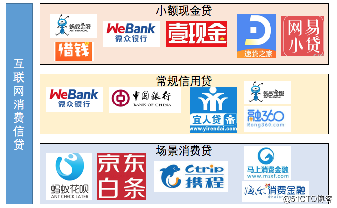
小额现金贷
- 直接向借款人提供资金；
- 金额较小，一般五万以内；
- 全流程线上化，实时审批放款；
常规信用贷
- 直接向借款人提供资金；
- 金额3-30万；
- 全流程线上化，但实际审批会有电话征信等环节，通常1-24小时内放款；
场景消费贷
- 资金向服务、产品提供方划转；
- 金额根据场景确定，通常不超过10万；
- 全流程线上化，实时放款。
高并发场景下互联网金融领域常见问题
由传统金融、银行项目演变而来的系统，往往存在众多历史债务和系统问题，如： 1）没有做过领域规划； 2）模块耦合性强； 3）领域界限模糊； 4）逻辑复杂处理流程长； 5）早期逻辑实现不易扩展； 6）领域模型抽象度不够等等。
领域的概念：领域可以理解为项目或产品可用于确定业务边界，让产品（业务）架构与逻辑（部署）架构对应，做好互联网金融产品的领域规划，像搭积木一样构建互联网产品。
互联网消费金融的产品特点
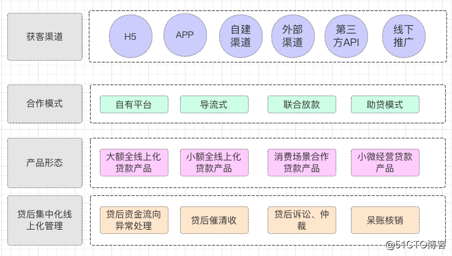
1、在依托场景方面，常常与各类商品、服务提供商进行合作，在大数据征信层面，也常常会有征信公司进行全程参与。 2、在资金端方面，有些以自有资金或银行金融机构的资金进行放贷，还有些通过理财平台进行融资后再进行放贷。 3、在支付方式方面，也常常与第三方支付平台进行合作，通过其来进行放贷或资金回款，极大的提高了资金的流动效率； 4、在具体支付对象方面，有的是直接将款项直接支付给消费者，有的是直接支付给产品、服务提供商。
授信对象
分为个人（自然人）贷款、企业（法人）贷款；
金额
- 授信额度：对整体项目（如按揭楼盘）或单一对象授信，额度下可包含多笔贷款；
- 贷款金额：单笔贷款金额；
利率
- 固定利率贷款：贷款期限内不调整利率；
- 浮动利率贷款：随基准利率调整，如按揭。调整方式有年调、季调、月调；
期限
- 短期贷款（1年以内）
- 中期贷款（1-5年）
- 长期贷款（5年以上）
担保方式
- 抵押贷款
- 质押贷款
- 保证贷款
- 信用贷款
贷款用途
- 消费贷款：购买住房、装修、购车、旅游、进修、购买大额消费品等；
- 经营贷款：购买商用房、购置设备、支付贷款、支付雇员工资等。
贷款风险
贷款风险是指贷款发放后因各种原因出现本金及收益损失的不确定性，风险不可能被消灭但可以被控制。 1.信用风险： 即借款人信用风险，贷款损失的最主要风险，产生原因为借款人还款能力或还款意愿下降的可能性； 2.流动性风险： 银行借入短期资金，贷出长期资金，短借长贷存在期限不匹配，导致流动性风险的增加； 3.市场风险：
- 利率风险：银行以低利率进行发放贷款，当市场利率升高后，导致利息收入损失甚至存贷款利率倒挂；
- 汇率风险：汇率变化导致国际信贷业务损失；
4.操作风险 因操作不当或条件不足而造成损失的可能性。如未核查客户身份真实性就发放了贷款； 5.道德风险 银行从业人员违反职业道德做出不利于银行的行为的可能性。
互联网消费金融高并发场景下的领域演进
互联网消费金融的产品逐步丰富
随着互联网消费金融的业务发展，产品的种类也越来越多，目前的互联网消费金融产品分为以下几大类型： 1. 电商消费金融 典型的产品代表，如蚂蚁花呗、京东白条等。电商平台本来就是一个巨大的消费平台，通过基于这个巨大的电商体系打造信用消费，无疑是对平台自身生态建设的一种补充。如今，BAT、京东、苏宁、国美、小米等互联网公司，都纷纷加入消费金融业务争夺战，围绕供应链和消费者打造金融产品，希望借此构建“生态”。消费者在电商平台上进行购物的时候，有的时候会出现支付不方便或者资金暂时紧张的情况，这个时候他们就会很自然地选择电商平台的信用消费。
2. 汽车消费金融 汽车金融是由消费者在购买汽车需要贷款时，可以直接向汽车金融公司申请优惠的支付方式，可以按照自身的个性化需求来选择不同的车型和不同的支付方法。对比银行，汽车金融是一种购车新选择。汽车金融是汽车产业与金融的结合，是金融产业的重要领域。与购买房子一样，购买汽车同样也是一笔不小的开支，贷款无形之中就成为众多消费者的一种选择。汽车消费金融中，尤以二手车消费金融为蓝海。由于目前银行的汽车金融业务主要集中在新车领域，尤其是和汽车厂商的合作，二手车金融***率非常低，这是一个巨大的发展机会。
3. 旅游消费金融 旅游消费金融是基于旅游为消费场景的，对具有旅游消费需求方提供的贷款产品。旅游消费金融正在成为旅游平台竞争的新焦点。从消费者的需求角度来看，旅游对于很多人来说都是一件非常向往的事情，尤其是对于一些收入并不高的年轻人来说，他们心中或多或少都会有几个特别想去的地方，但是由于经费不足等问题让他们的旅行只能成为泡影。对于一些费用昂贵的出国旅行来说，就更承担不起了，那么这个旅游金融分期消费就自然而然就会成为他们考虑的一种需求。
4. 医疗消费金融 很多家庭由于经济原因负担不起昂贵的医疗费用，这个时候分期医疗付费也就由此诞生了。眼下国内有少数医院通过与银行合作，推出了一种分期付费的方式。不过国内还没有单独的医疗金融平台通过与各大医院达成合作。整体看来，医疗消费金融是一件利国利民的事情，尤其是对于很多没什么资金实力老百姓来说，但是当前国内的医疗消费金融普及程度还过低，要让医疗消费金融顺利进行，需要医院与金融平台以及机构的共同配合。
5. 教育消费金融 教育消费金融不同于校园电商消费金融，虽然他们同样都是针对学生，但是一个是针对学生们的购买消费，另一个是针对学生们学习上的消费，是两种完全不同的消费。目前学好贷、龙门社交金融等平台以及众多的培训机构都推出了针对大学生的学费分期贷款。对于推出教育消费金融产品的互联网平台来说，要给学生放贷的话，必须要确保学生将来有一定的偿还能力，否则教育学费贷款尤其是留学贷款也不是个小数目，一旦平台的坏账率过高，就会导致平台的资金链出现问题。
6. 农村消费金融 农村金融是当前BAT进军的领域，但一些小的互联网公司也已经开始在农村消费金融领域进行布局。随着电商平台不断发展到农村，未来农村消费金融将会成为下一个新的风口。
7. 房产消费金融 传统的银行也一直都在深耕耘房产金融领域，包括新房金融、二手房金融、装修金融、租房金融等多个方面。房产消费金融市场规模庞大，竞争同样十分激烈。互联网房产消费金融最大的威胁就是对传统银行的威胁，但是房产金融是传统银行非常大的一块利润来源，传统银行对于互联网房产消费金融平台的反击是他们最大的威胁。
互联网消费金融贷款的生命周期
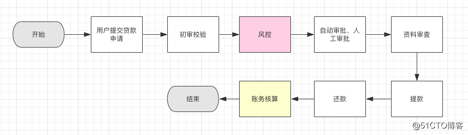
互联网消费金融的领域细分演变过程
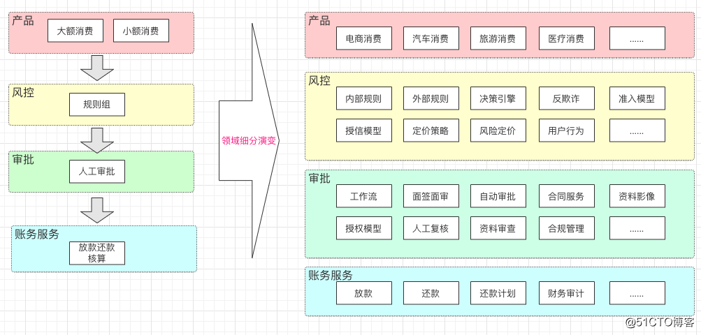
互联网消费金融风控领域模型设计
风控控制系统的领域职责范围
风控系统是根据已有的数据，比如用户提供的基本信息、贷款的基本信息、用户征信数据、工商报告等第三方报告数据，去判断和识别当前客户的违约、欺诈等风险的系统。包括建立风险规则组，风险探测，电核，内评和核额等，对外部系统提供服务。
贷前进件风控流程设计
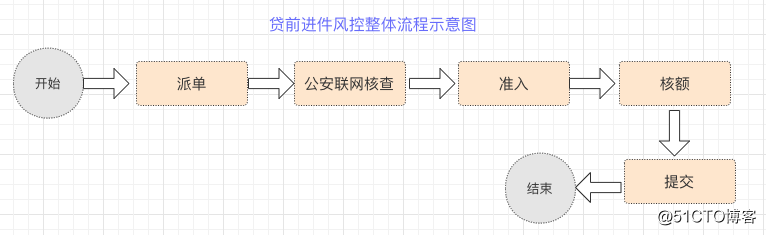
1）. 派单：
- 根据一定的规则分配客户经理追踪贷款进件；
- 常有的派单规程有，根据客户所在城市网点派单，随机派单，顺序派单，根据客户经理闲忙派单等；
2）. 公安联网核查： 调用公安联网接口，对用户信息进行核实、检验；
3）. 准入： 对用户资质进行评分、判断（国家征信、内评、规则组等），确认用户是否有资质进行贷款；
4）. 核额： 根据用户的信誉，个人信息，和征信等计算用户贷款的额度；
5）. 提交进件 把用户进件的信息存储、落库，并通过接口、MQ触发后续的进件审批审核等流程。
评分核额流程设计
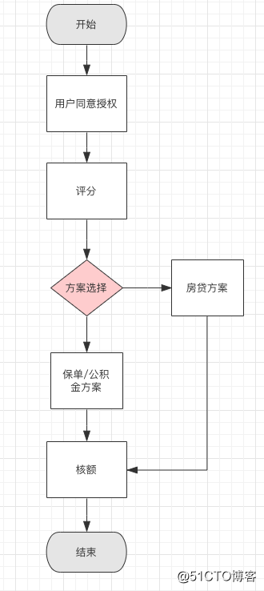
内评准入流程设计 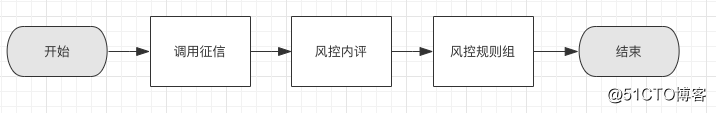
决策引擎流程设计 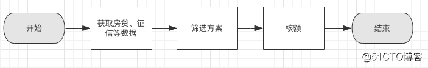
进件提交流程设计 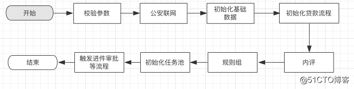
互联网消费风控领域模型整体设计 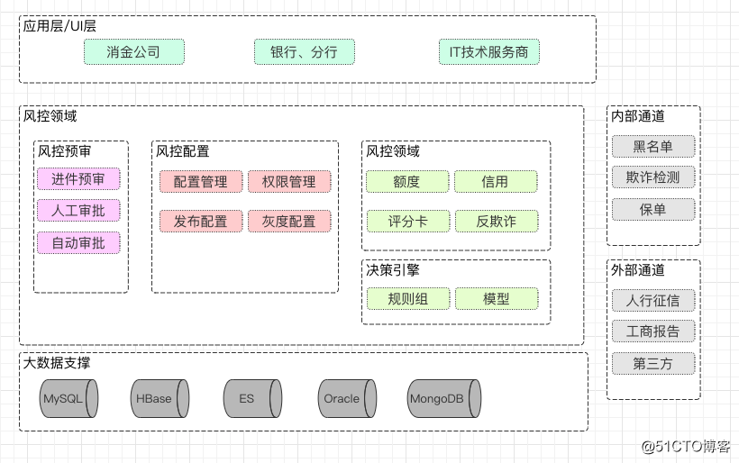
风控规则模型介绍 风控模型应该是从两个角度去考虑，第一个角度是资产端风控策略，第二个角度是资金端风控策略。考虑主要出发点应该是从贷前、袋中、贷后三个方向去考虑，结合传统业务的风控模型和互联用户的行为数据。针对资金，资产进行风险等级划分，防欺诈系统、袋中的舆情监控、贷后的权重叠加。
1）. 准入规则：对不同客户制定不同的贷款门槛，比如根据注册年限和消费次数等设置一个基本的准入门槛，对于后期可以分层次分批次的制定不同的风控策略。
2）. 反欺诈模型：从申请反欺诈、行为反欺诈、设备反欺诈等多维度制定反欺诈规则，确保及时侦测和处置可疑警告，维护黑名单数据库及时性、准确性、有效性，熟悉了解贷前、贷中、贷后业务全流程对反欺诈功能的需求。
- 白名单: 可以通过建立数据模型已经数据挖掘，机器学习相关算法进行优质用户的挖掘。
- 黑名单: 黑名单企业可以针对那些逾期、破产企业(法人作为黑名单)、通过手机号码、imei作为用户判断标识，调用第三放征信公司去进行鉴别。
3）. 评分卡：根据风险策略设置相应的权重，指定出完整的评分模型，并依据评分结果指定出审批策略、授信策略等。
4）. 风险等级划分：将不同的客群进行细分，采用决策树或规则组的方式对不同的客群制定不同的策略和规则，实行精细化审批。
5）. 贷后检测：对信贷客户进行日常贷后监测，及时发现风险信号，对于触发风险预警的客户采取一定的措施，如电话核实、提前收回贷款等。
6）. 模型优化与验证：跟踪、监测、维护及优化风控策略，确保风控策略的效能及其提升。
打造风控中台，解放生产力，提高业务效率
- 业务自助配置规则，自助发布
- 支持离线分析
- 支持灰度发布验证
- 全方位的监控能力

互联网消费金融账务核算领域规划设计
互联网消费金融账务核算领域的生命周期
在账务生命周期管理中，有还款计划试算、建账、期供计算、扣款、还款、展期、减免、调账、差错处理、核销等环节。 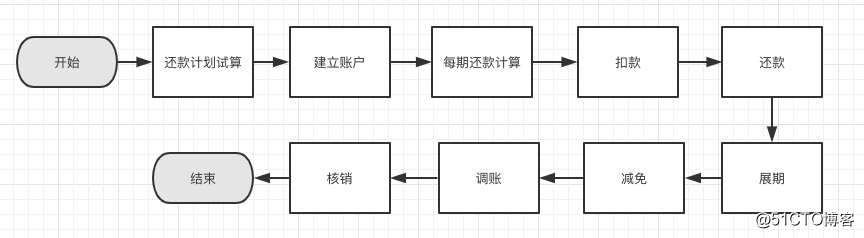
互联网消费金融银银合作、联合放款模式领域规划
在互联网金融的业务里，联合放款的模式是一个重要的组成部分。比如，银行之间的合作，银行与金融机构（蚂蚁金服、微信、京东金融）的等。通过银银合作的模式，共同打造贷款产品，实现共赢。

1）. 出资多样性
- 我行独资
- 他行独资
- 按比例出资
2）. 记账多样性 我行、他行部分需分别记账
3）. 扣款方式多样性
- 我行卡
- 他行卡代扣
互联网消费金融核心账务领域设计
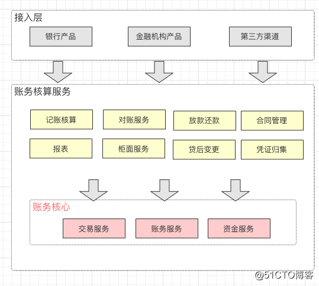
1）记账核算
- 记账
- 内转
- 计提
- 核销
2）对账服务 为确保每个账期内互联网消费金融平台与银行、第三方支付的交易资金正确性，需要进行对账
（1）资金对账：将业务资金流水和第三方支付、存管银行的资金台账根据流水号进行每日匹配对账； （2）内部对账：将业务系统交易流水与资金系统进行对账，将资金流水进行记账，进行资金系统与财务系统的对账，对账成功，再入账
3）放款与还款服务 这里涉及到与支付平台的交互，资金的支付、和客户还款的划扣等； （1）放款服务：放款校验、放款额度管理、记账等； （2）还款服务：批量还款、实时批扣还款、智能还款、用户手动还款、提前还款等。
4）合同管理 这里主要是指资金、账务相关的合同，如借款合同。
5）报表 报表服务主要包括：还款信息报表、更改信息报表、费用信息报表等
6）柜面服务 柜面功能主要有： （1）柜面提前还款（申请、审批、咨询等）； （2）撤销放款、撤销还款； （3）贷后核销管理（手动核销、核销后收回等）； （4）贷款清收。
7）贷后变更 主要功能有：贷款变更、期限变更、卡号变更、利息减免等。
8）凭证归集 主要功能有：凭证归集（还款本息凭证、结清证明、还款清单等）、凭证打印。